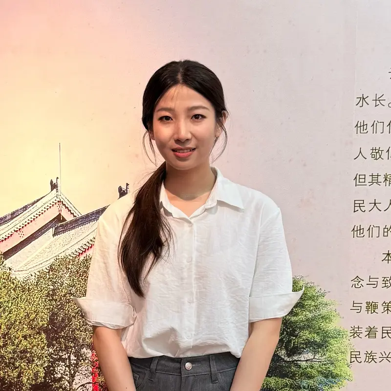
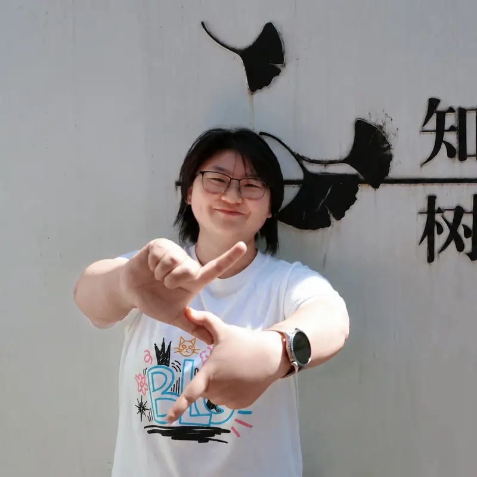
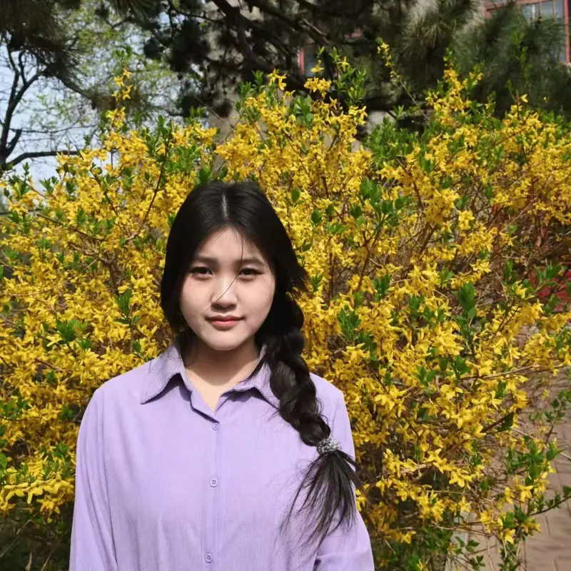
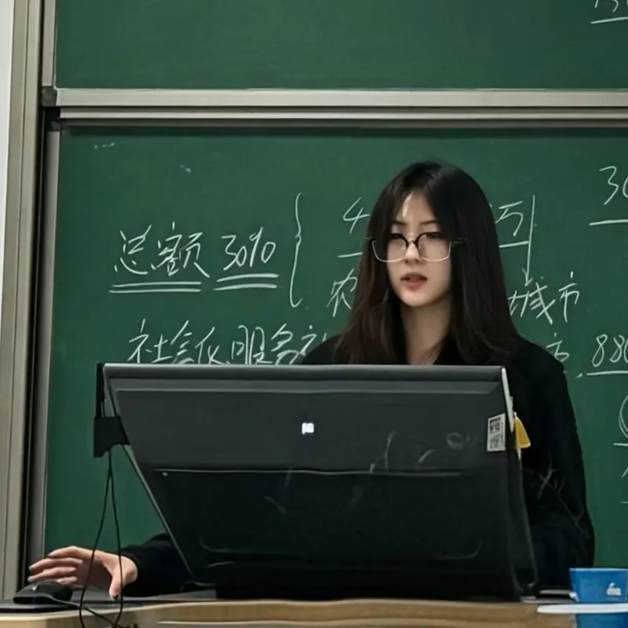
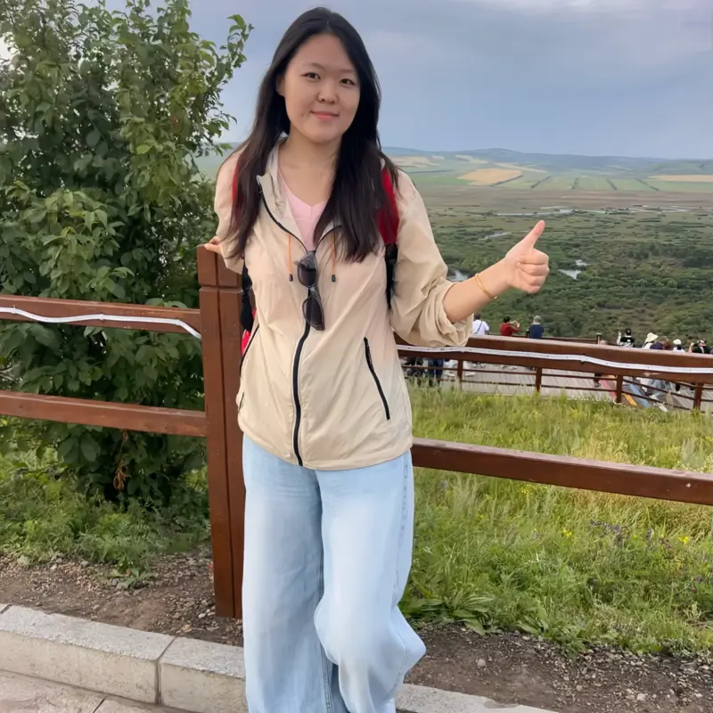
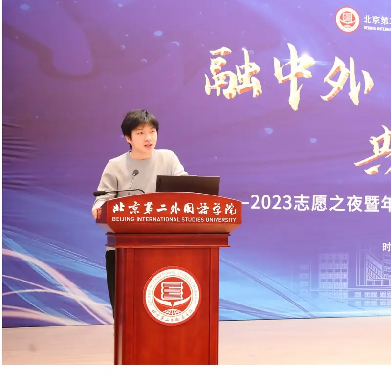

Plant trait networks
Representing the dimensionality of adaptation through relationships among plant traits. 植物功能性状网络与多维性状整合。
- Trait integration
- Network architecture
BEIJING FORESTRY UNIVERSITY · 北京林业大学
知山知水
树木树人
Understanding plant adaptation through the connections among functional traits.
Associate Professor · College of Grassland Science
北京林业大学 · 草业与草原学院
Principal Investigator / PI
Associate Professor · 副教授
北京林业大学 · 草业与草原学院
College of Grassland Science, Beijing Forestry University
以植物功能性状网络为切入点，关注多维性状协同与植物生态适应。通过大尺度数据整合，探索性状联系如何随生物多样性、气候和生境发生变化。
Liying1993@bjfu.edu.cn ↗My research focuses on plant functional traits and their coordination. I use trait networks and large-scale data synthesis to investigate how plants adapt across biodiversity, climate and habitat gradients.
我的研究聚焦植物功能性状及其相互联系，通过性状网络与多维性状整合，探索植物生态适应及其在森林和群落尺度上的变化。
I collaborate with Congcong Liu and colleagues through the PMFE Lab ↗.
Research / 研究方向
Linking trait coordination with biodiversity, climate and plant adaptation.
Representing the dimensionality of adaptation through relationships among plant traits. 植物功能性状网络与多维性状整合。
Exploring how leaf traits and their coordination vary with species richness, forest biomes and wet–dry environments. 生物多样性、气候与生态适应。
Selected publications / 代表性成果
Plant trait networks, functional integration and ecological adaptation.
Journal of Ecology
Oikos · Forum · e12190
New Phytologist 244, 337–340.
生态学报
Ecology Letters 25, 1442–1457.
Ecological Indicators 135, 108564.
Trends in Ecology & Evolution 35, 908–918.
# Equal contribution · * Corresponding author · Arrows open the article DOI or a publication search.
From Organ to Ecosystem
Monograph / 学术专著
From Organ to Ecosystem
He, N., Yu, G., Liu, C., Li, Y., Wang, R. (2025).
Springer Singapore · XII, 273 pages
从器官到生态系统，系统介绍植物功能性状、性状网络及其在群落和生态系统研究中的应用。
eBook ISBN: 978-981-96-8264-5
View on Springer ↗People / 联合课题组学生
Students in the joint PMFE Lab, connecting plant microstructure, functional traits and ecological adaptation.
PMFE 联合课题组学生
博士研究生

PhD Researcher

PhD Researcher
硕士研究生
Master’s Researcher

Master’s Researcher
Master’s Researcher
Master’s Researcher
Master’s Researcher

Master’s Researcher
Master’s Researcher

Master’s Researcher
Master’s Researcher
Master’s Researcher

Master’s Researcher
Recognition / 获奖荣誉
2024–2026 · 省部级
No. BYESS2024413
2023–2025 · 省部级
No. STQT2023C04
参与成果入选
第七完成人
Academic service / 学术兼职
Reviewer
New Phytologist
Forest Ecosystems
Frontiers in Plant Science
Journal of Plant Ecology
植物生态学报
Guest Editor
Forests